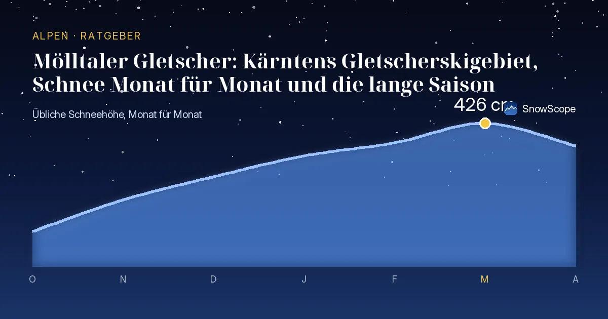
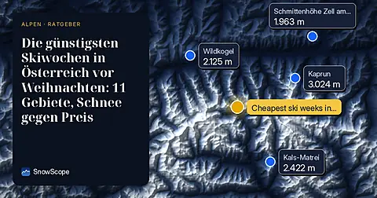

Mölltaler Gletscher: Kärntens Gletscherskigebiet, Schnee Monat für Monat und die lange Saison
Der Mölltaler Gletscher ist Kärntens einziges Gletscherskigebiet, ein hoher Kessel zwischen 2103 und 3084 m, den man vom Mölltal mit einer unterirdischen Standseilbahn erreicht. Die 21 km kartierten Pisten an 9 Liften sind bescheiden, der Schnee nicht: Unsere Historie aus 46 Wintern setzt das übliche Winter-Maximum am Gipfel bei 513 cm an, mehr als fünf Meter.
Die Live-Schneeprognose für Mölltaler Gletscher in der SnowScope-AppSchneehöhen, Pulverschnee-Alarme und 3D-Karte, gratis.

Schnee von September bis Juni
An der Mittelstation (2593 m) liegt der erste Schnee der Saison in der Hälfte der Winter bis zum 12. September, und er bleibt: Der letzte Schnee verschwindet dort bis zum 19. Juni. An der Mittelstation liegt in einem üblichen Winter an 256 Tagen Schnee, am Gipfel an 262 Tagen, fast das ganze Jahr.
Herbst und Frühwinter
Schon der November bringt in einem üblichen Jahr 57 cm an der Mittelstation und 104 cm am Gipfel, darum ist der Gletscher eines der Trainingsgebiete des frühen Winters. Der Dezember erreicht 118 und 198 cm. Selbst das untere Ende der Spanne ist komfortabel: neun von zehn Dezembern hatten am Gipfel mindestens 103 cm.
Die tiefen Monate
Die Schneehöhe wächst bis ins Frühjahr. Der Januar zeigt 163 cm an der Mittelstation, der März 245 cm, und der Gipfel erreicht 368 cm im März und 426 cm im April, dem tiefsten Monat dort. Die verlässlichste Woche an der Mittelstation ist die Kalenderwoche 13, Ende März, mit üblichen 266 cm.
Die Mittelstation hält mindestens 50 cm für 23 Wochen in neun von zehn Wintern, 31 Wochen in der Hälfte. Zwischen Dezember und April gibt es keine schlechte Woche.
Frühjahrsski bis in den Mai
Der Mai hat in einem üblichen Jahr noch 359 cm am Gipfel und 174 cm an der Mittelstation. Die Pisten werden gegen Mittag weich; die Morgenstunden am oberen Gletscher sind die, um die man plant.
Monat für Monat auf drei Höhen
Im Dezember hat ein üblicher Winter 65 cm im Tal (2103 m), 118 cm an der Mittelstation (2593 m) und 198 cm am Gipfel (3084 m). Im Januar hat ein üblicher Winter 97 cm im Tal (2103 m), 163 cm an der Mittelstation (2593 m) und 267 cm am Gipfel (3084 m). Im Februar hat ein üblicher Winter 134 cm im Tal (2103 m), 223 cm an der Mittelstation (2593 m) und 329 cm am Gipfel (3084 m).
Im März hat ein üblicher Winter 145 cm im Tal (2103 m), 245 cm an der Mittelstation (2593 m) und 368 cm am Gipfel (3084 m). Im April hat ein üblicher Winter 127 cm im Tal (2103 m), 245 cm an der Mittelstation (2593 m) und 426 cm am Gipfel (3084 m).
Ein schwacher Winter und ein starker Winter
Die Spanne zählt so viel wie die Mitte. An der Mittelstation hatten neun von zehn vergangenen Märzn mindestens 186 cm und einer von zehn 303 cm oder mehr; am Gipfel reicht dieselbe Spanne von 284 bis 460 cm.
Über den ganzen Winter lag das Maximum an der Mittelstation zwischen 202 cm im schwächsten vergangenen Winter und 427 cm im stärksten, um übliche 304 cm; am Gipfel zwischen 341 und 800 cm um 513 cm. An der Mittelstation lag in einem üblichen Winter an 256 Tagen Schnee, und der erste Schnee der Saison blieb dort in der Hälfte der Winter bis zum 12. September liegen. Das sind Werte für das Gebiet über 46 vergangene Winter, keine Messungen des Skigebiets; sie beschreiben, was zu erwarten ist, nicht, was die Pistenraupen hinzufügen.
Ein Gletscher, der sich langsam verändert
Vergleicht man die ersten 15 Winter unserer Reihe mit den letzten 15, ging das übliche Maximum am Gipfel von 534 auf 504 cm. Der Schnee kommt weiterhin; das Eis darunter schrumpft, wie an jedem Alpengletscher. Der letzte Winter erreichte am Gipfel 350 cm.
Tipps für Skifahrer
- Für garantierten Schnee im November und Dezember eine der sichersten Adressen der Ostalpen.
- Für den Gipfel anziehen: Das Skigebiet beginnt über der Baumgrenze, der Wind gehört dazu.
- Unsere Zahlen sind ein Modell vergangener Winter für das Gebiet; Pisten- und Liftöffnung stehen auf der Seite des Skigebiets.
- Bei Gletschersperre: das Skigebiet Ankogel weiter unten im Tal.
Quellen und Nachweise
- Wikipedia, „Mölltaler Gletscher“, abgerufen am 22 November 2026. de.wikipedia.org/wiki/M%C3%B6lltaler_Gletscher
Zu diesen Zahlen
Schneewerte: SnowScope-Schneehistorie, 46 vergangene Winter (1980-81 bis 2025-26) auf drei Höhen des Skigebiets (eine Schätzung für eine Fläche, keine Meldungen des Skigebiets). Lifte, Pisten und Anreise: die Quellen unten, geprüft am angegebenen Datum.
Offizielle Lawinenlageberichte: Lawinenwarndienst Kärnten
Diesen Bericht zitieren
Für Forschung, Lehre oder Presse: Zahlen und Grafiken sind unter CC BY 4.0 mit dieser Quellenangabe frei nutzbar.
SnowScope (2026), Mölltaler Gletscher: Kärntens Gletscherskigebiet, Schnee Monat für Monat und die lange Saison, https://snowscope.app/blog/de/2026/11/moelltaler-gletscher-snow-by-month-austria-highest-glacier-skiing.html, abgerufen am 2026-11-22
SnowScope (Atlas Labs). (2026, November 22). Mölltaler Gletscher: Kärntens Gletscherskigebiet, Schnee Monat für Monat und die lange Saison. SnowScope snow reports. https://snowscope.app/blog/de/2026/11/moelltaler-gletscher-snow-by-month-austria-highest-glacier-skiing.html
BibTeX
@misc{snowscope2026moelltalergletschersnowb,
author = {{SnowScope (Atlas Labs)}},
title = {Mölltaler Gletscher: Kärntens Gletscherskigebiet, Schnee Monat für Monat und die lange Saison},
year = {2026},
month = nov,
howpublished = {\url{https://snowscope.app/blog/de/2026/11/moelltaler-gletscher-snow-by-month-austria-highest-glacier-skiing.html}},
note = {Published 2026-11-22 11:14 UTC; accessed 2026-11-22}
}· CC BY 4.0 · Methoden, Daten und Werkzeuge →
Mölltaler Gletscher: Schnee und Temperatur nach Höhe, dieser Winter vs letzter (Werkzeuge) →
Mölltaler Gletscher folgen
Gratis: eine Nachricht, wenn Neuschnee kommt, und jeden Morgen die Vorhersage.
Weitere Schneeberichte

Von 20 EUR am Eröffnungswochenende bis zu 6-Tages-Pässen vor Weihnachten: ein Kalender der günstigsten Saisonstart-Angebote in den Alpen für 2026, mit dem Schnee, den du dabei erwarten kannst.

Österreich vor Weihnachten: Galtür 258 EUR und Kühtai 269 EUR für 6 Tage, mit 30 cm in über 90 % der Winter; Gletscher kosten mehr, kleine Hügel sind ein Risiko.